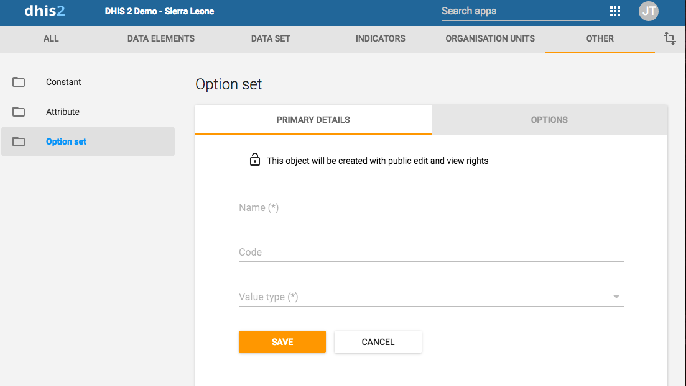

Option sets provide a pre-defined drop-down (enumerated) list for use in DHIS2. You can define any kind of options.
Example 10.11.
An option set called "Delivery type" would have the options: "Normal", "Breach", "Caesarian" and "Assisted".
|  |
Table 10.16. Option set objects in the Maintenance app
|
Object type |
Available functions |
|---|---|
|
Option set |
Create, edit, clone, share, delete, show details and translate |
![[Important]](resources/images/admon/important.png) | Important |
|---|---|
Option sets must have a code as well as a name. You can change the names but you can't change the codes. Both names and codes of all options must be unique, even across different option sets. |
To create an option set:
Click Apps > Maintenance > Option set.
Click the add button.
In the Primary details tab, define the option set:
In the Name field, type the name of the constant.
In the Code field, assign a code.
Select a Value type.
Click Save.
For each option you need, perform the following tasks:
Click the Options tab.
Click the add button.
Type a Name and a Code.
Sort the options by name, code/value or manually.
Click Save.
Open the Maintenance app and find the type of metadata object you want to edit.
In the object list, click the options menu and select Edit.
Modify the options you want.
Click Save.
Open the Maintenance app and find the type of metadata object you want to clone.
In the object list, click the options menu and select Clone.
Modify the options you want.
Click Save.
Open the Maintenance app and find the type of metadata object you want to modify.
In the object list, click the options menu and select Sharing settings.
(Optional) Search for a user group and select it. The user group is added to the list.
Change the settings for the user groups you want to modify.
Can view: Everyone in the user group can view the object
Can edit: Everyone in the user group can view and edit the object
The default setting is that everyone (Public access) can view and edit objects.
Click Close.
Open the Maintenance app and find the type of metadata object you want to delete.
In the object list, click the options menu and select Delete.
Click Confirm.
Open the Maintenance app and find the type of metadata object you want to view.
In the object list, click the options menu and select Show details.